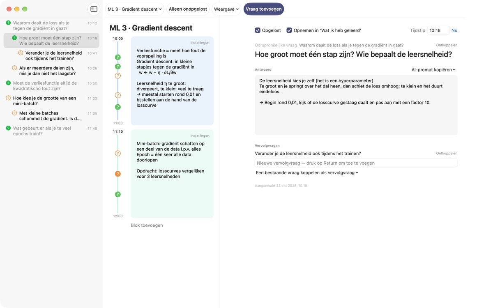
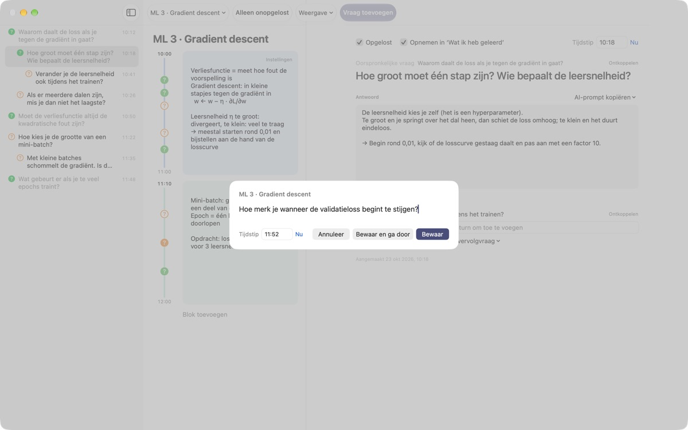
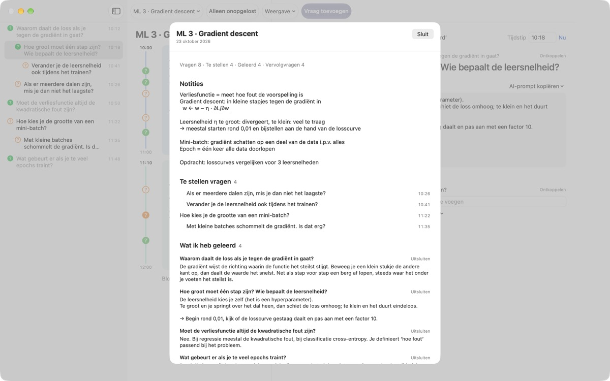
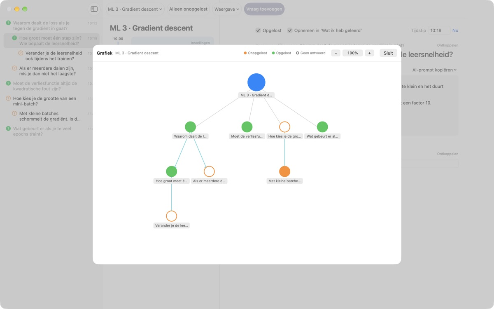

Laat geen collegevraag
meer ontsnappen
Druk op ⌘⇧N, typ één regel en de vraag staat naast je notities van precies die minuut. Jij blijft luisteren en zoekt het antwoord later.
Voor macOS 14 of nieuwer. Geen account, alles blijft op deze Mac.

Probeer het hier
Je zit midden in een college over machine learning. Typ een vraag en bewaar hem: naast het blok van dat tijdstip verschijnt een ?. Kies een tijd buiten de blokken en er komt een nieuw blok bij om hem in te zetten.
Weet je na het college nog wat je wilde vragen?
Net als je denkt ‘wacht, waarom eigenlijk?’, is de docent al bij het volgende onderwerp. Het vraagteken in de kantlijn weet later niet meer bij welke uitleg het hoorde en blijft onbeantwoord. LectureQ koppelt elke vraag aan je notities van dat moment en houdt hem in beeld tot je het uitgezocht hebt.
Vragen zonder de volgende zin te missen
Open het invoervenster met Vraag toevoegen in de knoppenbalk of met ⌘⇧N. Het tijdstip vult zichzelf in. Return bewaart, ⌘Return bewaart en zet je meteen klaar voor de volgende.
Elke vraag verschijnt als ? naast het tijdblok waar hij bij hoort. Zo zie je later meteen uit welk deel van het college hij kwam.

Beantwoorde vragen worden wat je hebt geleerd
Schrijf het antwoord in je eigen woorden, markeer de vraag als opgelost en hij komt in de samenvatting onder Wat ik heb geleerd. Wat nog open staat blijft onder Te stellen vragen, zodat je lijstje voor het volgende college zich vanzelf vult.AI-prompt kopiëren in de vraagdetails zet een kant-en-klare prompt op het klembord, met de collegetitel en je notities van dat moment. Plak hem in de AI-dienst die je toch al gebruikt.

Zie waar je denken heen ging
Vervolgvragen staan ingesprongen onder de vraag waar ze uit voortkwamen, en de grafiek verbindt ze met pijlen. Klik op een knooppunt om direct naar die vraag te gaan.
Bij Leerstatus noteer je waar je nu staat, waar je na de cursus wilt zijn en wat je wilt leren, en vergelijk je die.

In drie stappen aan de slag
- 1
Maak een college aan
Via het collegemenu links in de knoppenbalk, of importeer een gesprek dat als Markdown is bewaard.
- 2
Schrijf hem op zodra hij opkomt
Druk op
⌘⇧N. Eén regel is genoeg, het tijdstip staat er al. - 3
Beantwoord hem later
Schrijf het antwoord en klik op het ? om hem als opgelost te markeren. Hij verhuist naar Wat ik heb geleerd.
Toetscombinaties
- ⌘⇧N
- Vraag toevoegen
- Return
- Bewaren
- ⌘Return
- Bewaren en de volgende typen
- Esc
- Annuleren
- ⌘1
- Samenvatting: te stellen vragen, wat je hebt geleerd, notities
- ⌘2
- Grafiek: oorspronkelijke vragen en vervolgvragen
- ⌘3
- Tijdblokken: alle blokken van alle colleges op volgorde
- ⌘4
- Leerstatus
- ⌘+ · ⌘- · ⌘0
- Tekst groter, kleiner, standaardgrootte
Je vindt ze ook allemaal in het menu Weergave.
Alle functies zijn gratis
Gratis
- Snel vragen vastleggen en notities per tijdblok
- Vervolgvragen en grafiek
- Samenvatting, overzicht van tijdblokken en Leerstatus
- AI-prompts in vijf stappen, gekopieerd naar het klembord
- Gesprekken importeren uit Markdown
Steun de ontwikkelaar
- Stuur via Instellingen een kleine fooi als de app je helpt
- Een fooi ontgrendelt niets extra
Met of zonder fooi werkt alles precies hetzelfde.
Geen advertenties, geen account. Je notities blijven op deze Mac.
Veelgestelde vragen
Wat betekenen de kleuren van het ?
In de lijst is een lege oranje cirkel een vraag die nog niet is opgelost en een gevulde groene een opgeloste vraag. Klik op het ? om te wisselen, en zet Alleen onopgelost in de knoppenbalk aan om alleen open vragen te zien. Naast een tijdblok geeft de kleur aan of de vraag is opgelost en betekent een gevulde cirkel dat er al een antwoord staat.
Hoe werken tijdblokken?
Met Blok toevoegen begint op dat moment een nieuw blok en eindigt het vorige daar. Leg je een vraag vast op een tijd die geen enkel blok dekt, dan wordt er een blok omheen gemaakt. Via Instellingen rechtsboven in een blok pas je kleur, begintijd en duur aan of verwijder je het. Verwijder je zelf een blok, dan maakt dat college geen blokken meer automatisch aan.
Wat is het verschil tussen ‘Opgelost’ en ‘Wat ik heb geleerd’?
Vink je Opgelost aan in de vraagdetails, dan kies je ook of de vraag meetelt bij Wat ik heb geleerd. Daar verschijnen alleen opgeloste vragen die je hebt opgenomen. Ook vanuit de samenvatting kun je ze weghalen of terugzetten; het antwoord blijft gewoon staan.
Hoe werken de AI-prompts?
Open in de vraagdetails AI-prompt kopiëren naast Antwoord en kies een stap: Vraag aanscherpen, Antwoord zoeken, Antwoord ter discussie stellen, Vervolgvragen ophalen of Mijn antwoord laten beoordelen. Er komt een prompt op het klembord met de collegetitel, je notities van dat moment, je leerstatus en de oorspronkelijke vraag. De prompttekst zelf is voorlopig in het Koreaans; de meeste AI-diensten begrijpen hem toch, en je kunt om een antwoord in het Nederlands vragen. Voor Mijn antwoord laten beoordelen moet je eerst zelf een antwoord hebben geschreven. De app maakt zelf nooit verbinding met een AI-dienst.
Kan ik een gesprek importeren dat als Markdown is bewaard?
Kies Importeren uit Markdown… in het collegemenu. # Titel wordt de naam van het college, en in elke ## Sectie is de eerste vraag de oorspronkelijke vraag en zijn de volgende vervolgvragen. Wat de eerste spreker in het bestand zegt, wordt een vraag; wat anderen zeggen, het antwoord op de vraag ervoor. Het originele bestand blijft onaangeroerd.
Hoe verwijder ik een vraag of een college?
Klik met de rechtermuisknop op de vraag in de lijst en kies Verwijder. Voor een college gebruik je Huidig college verwijderen in het collegemenu; de vragen en blokken gaan mee. Dit is niet terug te draaien, dus maak eerst een reservekopie van wat belangrijk is.
Waar staan mijn gegevens, en hoe maak ik een reservekopie?
Alles blijft op deze Mac en wordt nergens geüpload. Stop voor een reservekopie de app en kopieer de hele map ~/Library/Containers/com.lectureq.LectureQ/Data/Library/Application Support/LectureQ/ inclusief de bestanden -wal en -shm. De app stuurt alleen anonieme gebruiksstatistieken, zoals de versie en de dagen waarop je hem opende, nooit wat je schrijft.
De tekst is te klein.
Met ⌘+ wordt hij groter, met ⌘- kleiner en met ⌘0 weer standaard. Het gaat van 85% tot 200% en de instelling wordt onthouden.
Op welke Macs werkt de app?
Op elke Mac met macOS 14 of nieuwer. De broncode staat openbaar op GitHub onder M1zz/LectureQ.
Er werkt iets niet. Bij wie meld ik dat?
Stuur feedback via de Instellingen (⌘,) van de app of mail naar het adres hieronder. Vermeld je macOS-versie en wat je aan het doen was, dan kunnen we sneller kijken.
Vragen of feedback? Mail naar mizzking75@gmail.com.